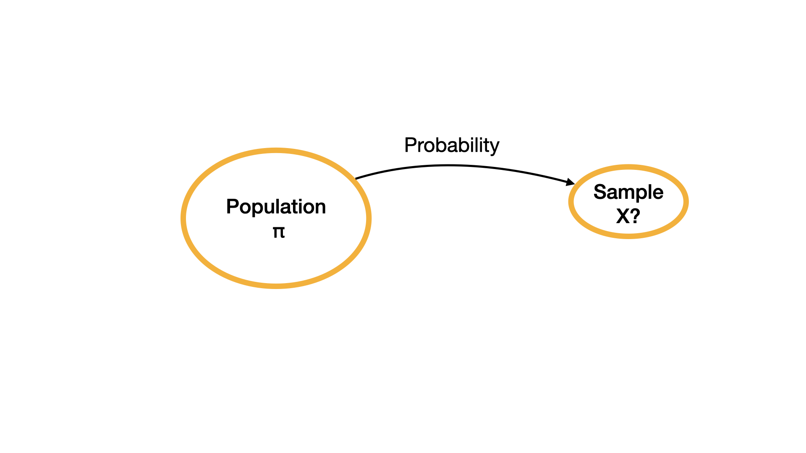
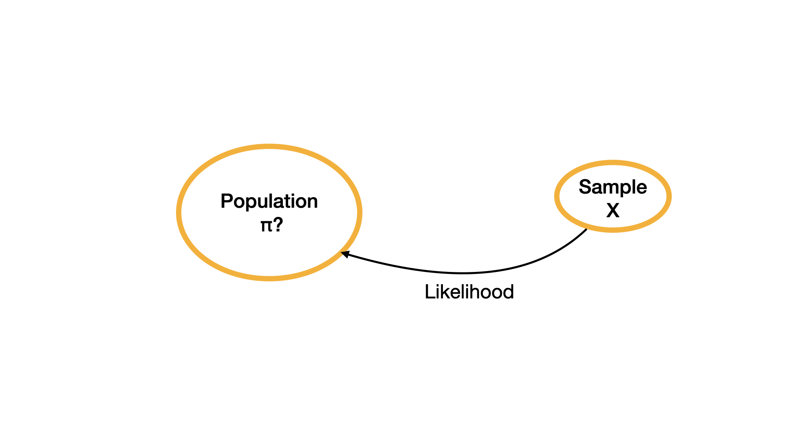
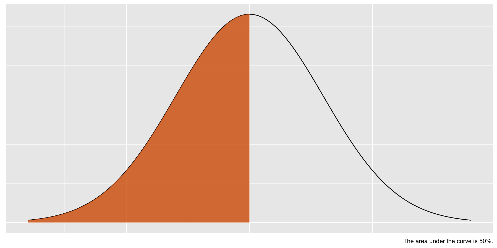
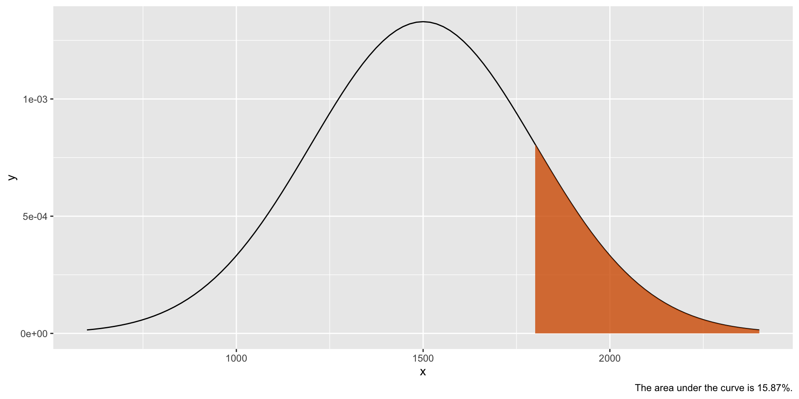

Foundations for Statistical Inference
Statistical Inference
Making meaning of data
In the first half of the quarter, we retrieved data (by downloading or scraping), opened data, joined data, wrangled data, described data.
In the second half of the quarter we will make meaning of data using statistical inference and modeling.
Research question
Every research project aims to answer a research question (or multiple questions).
Example
Do UCI students who exercise regularly have higher GPA?
Population
Each research question aims to examine a population.
Example
Population for this research question is UCI students.
Sampling
A population is a collection of elements which the research question aims to study. However it is often costly and sometimes impossible to study the whole population. Often a subset of the population is selected to be studied. Sample is the subset of the population that is studied.
Example
Since it would be almost impossible to study ALL UCI students, we can study a sample of students.
Note
The goal is to have a sample that is representative of the population so that the findings of the study can generalize to the population.
Descriptive Statistics vs. Inferential Statistics
In descriptive statistics, we use sample statistics such as the sample mean or proportion to understand the observed data.
In inferential statistics we use the observed data to make an inference about the population parameters using probabilistic models.
Bayesian vs. Frequentist Statistics
- These are two major paradigms that define probability and thus two major paradigms to making statistical inference.
- We will make statistical inference using Bayesian methods and next week we will use frequentist methods. Both these methods are valid and used in research.
- Which of these methods you will choose to utilize in your final projects will depend on your understanding of your research topic, your philosophical approach to science, and a few statistical considerations.
Probability
Definitions
In a random process there is more than one possible outcome and it is hard to predict what the outcome would be. Typical random processes include coin flips and dice rolls.Sample space is the set of all possible outcomes. For instance, if we consider roll of a six-sided die as the random process then the sample space would be
\[S = \{1, 2, 3, 4, 5, 6\}\]
Probability definition
A numeric outcome of a random process is called a random variable. Let \(X\) represent the number shown on the top surface of the die after a roll. We might wonder, for instance, what the probability of X being 3 is or using notation we can write this as \(P(X = 3) = ?\) Even though many people might say that this probability is \(\frac{1}{6}\) there might be many different reasons why they say that.
Classical probability
A person who uses classical definition of probability might realize that there are six possible outcomes. Number 3 is one of the six possible outcomes. The die is fair indicating 3 is as probable as 1, 2, 4, 5, and 6. Thus, they would state that the probability in this case is \(\frac{1}{6}\).
Frequentist probability
A person who uses frequentist definition of probability would be concerned about how the random processes would behave in the long-term. They can roll the die many times, let’s say 10,000 times. If they observe the number 3 show up 1600 times, they can state that the probability is \(\frac{1600}{10,000} = 0.16\) which is close to \(\frac{1}{6} = 0.1\overline{6}\). In absolute frequentist definition, we would assume that the number of die rolls does not stop at 10,000 and approaches infinity. In that instant, then the probability would be \(\frac{1}{6} = 0.1\overline{6}\).
Bayesian probability
A person who uses Bayesian definition of probability can possibly state the probability as \(\frac{1}{6} = 0.1\overline{6}\) based on a reasonable expectation or based on their previous observations of fair die rolls. Perhaps their past experiences might have shown that no die manufacturer produces a perfectly “fair” die and thus they might even state that the probability is actually \(0.15\). Two Bayesians can even disagree what the corresponding probability value is!
Important things to note about probability:
- Probability must be between 0 and 1. This is inclusive of 0 an 1.
- Probabilities of all possible outcomes must total 1.
These rules hold true regardless of whether one uses classical, frequentist, or Bayesian definitions of probability.
Probability vs. Likelihood
In every day conversations, many people use probability and likelihood interchangeably. You might hear a news reporter saying “How likely is it for a candidate to win an election?” instead of saying “How probable is it for a candidate to win an election?”. From a mathematical point of view probability and likelihood differ.
Probability vs. Likelihood example
Consider an unfair coin that is designed in a way to favor heads. The proportion of heads is favored about \(\frac{2}{3}\) of the time as opposed to tails that is favored about \(\frac{1}{3}\) of the time. We let the parameter \(\pi\) represent the proportion of heads that this coin is expected to show after flipping. By design of this coin, \(\pi = \frac{2}{3}\).
Probability
When a population parameter is known (i.e., \(\pi = \frac{2}{3}\)) and the sample observations are unknown, then we can ask probabilistic questions about what we can possibly observe in the sample.
Let \(X\) represent the number of heads in three coin flips. We can possibly have 0, 1, 2, or 3 head(s) in three coin flips. We can ask questions like what is the probability that we observe 1 head in three coin flips.
| X | Scenario | Calculation | \(P(X\)) |
|---|---|---|---|
| 0 | TTT | \(\frac{1}{3} \times \frac{1}{3} \times \frac{1}{3}\) | \(\frac{1}{27}\) |
| 1 | HTT, THT or TTH | \(\frac{2}{3} \times \frac{1}{3} \times \frac{1}{3}+ \frac{1}{3} \times \frac{2}{3} \times \frac{1}{3} + \frac{1}{3} \times \frac{1}{3} \times \frac{2}{3}\) | \(\frac{6}{27}\) |
| 2 | HHT, THH or HTH | \(\frac{2}{3} \times \frac{2}{3} \times \frac{1}{3}+ \frac{1}{3} \times \frac{2}{3} \times \frac{2}{3} + \frac{2}{3} \times \frac{1}{3} \times \frac{2}{3}\) | \(\frac{12}{27}\) |
| 3 | HHH | \(\frac{2}{3} \times \frac{2}{3} \times \frac{2}{3}\) | \(\frac{8}{27}\) |
Notice that the last column of the table adds up to 1.
Likelihood
Now let’s consider the opposite case when \(\pi\) is unknown, in other words we don’t know if the coin is unfair or not, if unfair we don’t know how unfair it is but we do know \(X\), in other words we have observed data based on three coin flips. We know that \(x = 1\) after having observed three coin flips. In other words, we observed one head after three coin flips.
Likelihood
Likelihood problems deal with an unknown parameter (e.g., \(\pi\)) and estimation of the unknown parameter based on observed data from the sample.
Likelihood
In this case, \(\pi\) is unknown. We don’t know how unfair the coin is. \(\pi\) can take any value between 0 and 1, including a value such as 0.325382. To simplify the problem, we will assume that 0, 0.1, 0.2, 0.3, 0.4, 0.5, 0.6, 0.7, 0.8, 0.9 and 1 are the only possible values of \(\pi\). For now, we will first focus on \(\pi\) possibly being 0.6.
Likelihood
Our main question then is:
What is the likelihood that \(\pi\) is 0.6 if we observed only one head in three coin flips?
Likelihood
We have observed the scenario HTT, THT, or TTH in the sample. If \(\pi\) were to be 0.6 then probability of heads is 0.6 and probability of tails 0.4. Then probability of observing HTT is 0.6 \(\times\) 0.4 \(\times\) 0.4 = 0.096. The probability of observing THT is 0.4 \(\times\) 0.6 \(\times\) 0.4 = 0.096. Similarly, the probability of observing TTH is 0.4 \(\times\) 0.4 \(\times\) 0.6 = 0.096. Then likelihood of \(\pi\) being 0.6 is 0.096 \(+\) 0.096 \(+\) 0.096 = 0.288
| \(\pi\) | Likelihood Calculation | Likelihood |
|---|---|---|
| 0.0 | [0 \(\times\) 1 \(\times\) 1] + [1 \(\times\) 0 \(\times\) 1] + [1 \(\times\) 1 \(\times\) 0] | 0 |
| 0.1 | [0.1 \(\times\) 0.9 \(\times\) 0.9] + [0.9 \(\times\) 0.1 \(\times\) 0.9] + [0.9 \(\times\) 0.9 \(\times\) 0.1] | 0.243 |
| 0.2 | [0.2 \(\times\) 0.8 \(\times\) 0.8] + [0.8 \(\times\) 0.2 \(\times\) 0.8] + [0.8 \(\times\) 0.8 \(\times\) 0.2] | 0.384 |
| 0.3 | [0.3 \(\times\) 0.7 \(\times\) 0.7] + [0.7 \(\times\) 0.3 \(\times\) 0.7] + [0.7 \(\times\) 0.7 \(\times\) 0.3] | 0.441 |
| 0.4 | [0.4 \(\times\) 0.6 \(\times\) 0.6] + [0.6 \(\times\) 0.4 \(\times\) 0.6] + [0.6 \(\times\) 0.6 \(\times\) 0.4] | 0.432 |
| 0.5 | [0.5 \(\times\) 0.5 \(\times\) 0.5] + [0.5 \(\times\) 0.5 \(\times\) 0.5] + [0.5 \(\times\) 0.5 \(\times\) 0.5] | 0.375 |
| 0.6 | [0.6 \(\times\) 0.4 \(\times\) 0.4] + [0.4 \(\times\) 0.6 \(\times\) 0.4] + [0.4 \(\times\) 0.4 \(\times\) 0.6] | 0.288 |
| 0.7 | [0.7 \(\times\) 0.3 \(\times\) 0.3] + [0.3 \(\times\) 0.7 \(\times\) 0.3] + [0.3 \(\times\) 0.3 \(\times\) 0.7] | 0.189 |
| 0.8 | [0.8 \(\times\) 0.2 \(\times\) 0.2] + [0.2 \(\times\) 0.8 \(\times\) 0.2] + [0.2 \(\times\) 0.2 \(\times\) 0.8] | 0.096 |
| 0.9 | [0.9 \(\times\) 0.1 \(\times\) 0.1] + [0.1 \(\times\) 0.9 \(\times\) 0.1] + [0.1 \(\times\) 0.1 \(\times\) 0.9] | 0.027 |
| 1.0 | [1 \(\times\) 0 \(\times\) 0] + [0 \(\times\) 1 \(\times\) 0] + [0 \(\times\) 0 \(\times\) 1] | 0 |
Note that the last column of likelihood calculations do not add up to 1.
Normal distribution
This is a symmetric distribution with mean, mode, and median falling exactly in the middle. The shaded region thus shows that the area under the curve is 50% indicating that if any data follows a normal distribution, we would expect 50% of the data to fall below the mean.
Normal example
For instance SAT scores are normally distributed with a mean of 1500 which means about 50% of test takers score below 1500.
Normal notation
The shape of the distribution is controlled by two parameters: mean (\(\mu\)) and variance (\(\sigma^2\)). Using notation a normal distribution is shown as \(N(\mu, \sigma^2)\)
Normal - prob
Normal prob
Let’s consider the SAT example again. SAT scores are normally distributed with a mean of 1500 and a standard deviation of 300. We can see in the previous figure that the area under the curve where SAT scores are greater than 1800 is 15.87 %. Thus the probability an SAT score being greater than 1800 is 0.1587.
Birth weight of babies are known to be normally distributed with a mean of 7.5 pounds and a standard deviation of 1.1 pounds. If a baby is born less than 5.5 pounds then the baby is considered to be low weight. We can see in the previous plot that the probability a baby is born low weight is 0.0345.
Beta distribution
We use Beta distribution to model random variables that can take values 0 and 1. Next class we will use the Beta distribution to model the parameter \(\pi\). Beta distribution has two parameters \(\alpha\) and \(\beta\). Let random variable, \(\pi\) represent the proportion of bike owners on campus. The Beta distribution takes two shape parameters as \(\alpha\) and \(\beta\).